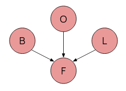

Introduction
AI is a massive module, filled with a lot of important things and redundant fluff. My aim here is to rewrite my notes for the module to remove all of the fluff, which not only makes the task easier for me, but also means there's less filler content. This page assumes some inherent knowledge from AI and its keywords, as well as knowledge of logic from CS130 or CS262 -- it will not do to read it from scratch.
The old long one can be found here.
Looking through the past exam papers, there are 7 overall topics that are included, some more than others, being
- Conditional Probability and Bayes' Theorem
- CSPs
- Graph Searching and Heuristics
- Reinforcement (Q-) Learning
- Knowledge Bases
- Partial Order Planning and Rule systems
Contents
Search
Search is one of the most essential forms of problem solving. It entails making moves along a problem space (usually nodes in a graph) in order to try get to a goal.
There are two main methods of searching: Informed and Uninformed.
In all cases, assume we have reduced the problem down to a graph of nodes, where searching algorithms is at home. Specifically, often we want to talk about a tree graph. Trees have a root node and some goal nodes further down.
Graph searching is pretty much no different from tree searching, except that we use \(\langle x, y, z \rangle\) to represent paths.
Uninformed Search
Uninformed does not use information from the question - it is a brute force method.
Generic Tree Search
In the general case, a search, starting from the root node of a tree (or from a given node in a graph) can be described as follows:
-
While there are still nodes yet to be expored (candidates for expansion):
- Expand a node according to your searching strategy
- Is it a goal? If so, return success. Else, carry on.
- Return failure
The unexpanded nodes that we can immediately expand to are called the frontier, and are stored in a queue structure -- our search strategy determines how this queue is ordered.
Breadth First Search
In short: expand the shallowest node first.
Frontier queue is ordered by distance from the origin/root. Successor nodes are added to the end of the queue.

For a branching factor \(b\) and the depth of least cost solution \(d\) the time complexity is \(O(b^d)\)... i.e. \(O(n)\) in number of nodes. The space complexity is the same - which can be a big problem if there are lots of nodes.
BFS will always find a solution if \(b\) is finite (complete).
Depth First Search
In short: expand the deepest node first.
Frontier queue is a stack, put successors at the start.

DFS has a time complexity of \(O(b^m)\), where \(m\) is the maximum depth, rather than that of the nearest solution. This can be bad if \(m\) is large. However, DFS's main advantage is its space complexity -- \(O(bm)\) -- only one path needs to be stored, making DFS better where memory is tighter.
DFS is incomplete -- if \(d\) is infinite (or graph has loops) then DFS may never terminate.
Lowest Cost First Search
As the name implies, select a node on the path with the lowest cost first.
The path cost is the sum of all the arcs from the origin to the newly expanded node: \(cost(\langle n_0 \dots n_k \rangle) = \sum_{i=1}^k cost(\langle n_{i-1}, n_i \rangle \).
Frontier is priority queue ordered by cost. The first path to a goal found is the least cost goal. Note this reduces to breadth first when all arcs are of equal cost.
Informed Search
Informed search uses "problem specific knowledge", such as the location of the goal, an estimate of distance, etc., to help inform its search choices. They are usually much better than brute force uninformed search.
Best First Search
Best first search uses a heuristic - some estimate of the final distance for each path to determine the choice of exploration. Heuristics come up a lot, since AI is all about "good enough". There are two variants:
Heuristic DFS picks the node with the best possible heuristic estimate.
Greedy Best First Search picks the path with the best possible heuristic.
And what is the heurisitc? Well, it depends on the situation, but say you're in a maze, and the nodes are intersections / turns. Perhaps the heuristic is the euclidean (i.e. straight diagonal distance) between that corner and the goal square.
However, you might quickly notice that for a maze, the closest "as the crow flies" might be a massive dead end. This is the problem with BFS, where the heuristic may just lead to the wrong path, and if the algorithm is not programmed well enough, forever looping.
The crucial thing is that heuristics are underestimates.
There seems to not be much difference between the two apart from naming, so just default to "Greedy BFS I guess".
Greedy BFS has a time and space complexity of \(b^n\) for a branching factor \(b\) and a path length \(n\). It may not ever find a solution, and thus is incomplete.
A* Search
The very important significant one. A* takes into account both path cost and remaining heuristic when it does its searching.
Let \(g(p)\) or \(cost(p)\) be the cost of the current path \(p\), and the heuristic from the end of p to the goal as \(h(p)\).
Let \(f(p) = h(p) + g(p)\), the total estimate of a path's cost from start to finish, so to say. This is our final evaluation function
A* orders the frontier by \(f(p)\), and picks like that. In this way, it is a mix of Lowest-cost first and Best-first, and is actually pretty damn good.
An algorithm is ADMISSIBLE if a solution existing \(\implies\) the optimal solution is found.
A* is an admissible algorithm.

A good heuristic is better, an overestimate can be really bad but too far of an underestimate is also bad - A* explores every path with an estimate less than the optimal cost, so if there are a lot of paths here, A* can still take a while.
A* thus has a time complexity relative to \(\textrm{error of }h(p) \cdot \textrm{length of solution}\) - which is pretty good, the only problem is that A* is exponential in space, because it needs all nodes in memory.
Cycle Checking and Path Pruning
This is how you stop algorithms which may not halt from not halting.
Pruning a path means removing it from consideration entirely, which saves memory holding unnecessary paths.
Cycle Checking: If your explored path reaches an already explored node in memory, for example if you went a -> b -> c -> d -> b, you can prune the d -> c -> b bit without losing an optimal path solution, since it forms a closed cycle.
Path pruning: If you have a path in memory that goes like s -> b -> x -> y -> z -> u -> h -> m -> p, and later on in searching you find a different path s -> i -> m -> p through a new node i, then you can prune away the first path, since you can use the second one to get to the same destination.
Note though how I didn't say longer and shorter - that's because it's not, it's recency. This is why you have underestimate heuristics - otherwise you won't necessarily get the most optimal solution.
A Monotone Heuristic is where the heuristic is an underestimate for all arcs across a graph. These heuristics are also called consistent, and will never overestimate.
A* Search with a consistent heuristic is needed to find an optimal path.
More Searching
Searching backwards from the goal is effectively the same as searching forward from the start.
Of course if the backwards branching factor is much different from the forwards one, the efficiency of one direction vs another may be vastly different. Sometimes, even, one direction is not available, if the graph is being constructed dynamically.
Provided not, we can get bidirectional search: search from both start and end simultaneously. \(2b^{\frac{k}{2}} < b^k\) after all (b branch. factor, k depth of goal). Of course, the frontiers must somehow meet, so one side is usually a BFS.
Extend to island-driven search, where we pick \(M\) "interesting locations/checkpoints" and search simultanously from all of those. \(Mb^{\frac{k}{M}}\) is faster still -- the problem is choosing said "interesting locations".
Iterative Deepening and Depth First Branch and Bound
We like DFS because low memory, but DFS might follow its own tail into the abyss, so how do we prevent that? We can limit how deep DFS will go - making bounded DFS.
But what if the bound is too shallow? Then, we gradually increase the bound, and rerun DFS, until we get to the goal. This is now Iterative Deepening of the bound.
But this is still a dumb algorithm. What if we add h e u r i s t i c s to find an optimal solution? Suppose we already have a path to the goal. Let's set a bound \(p\) as its cost. If we have a path where the cost + heuristic \(> p\), then clearly, it will never be shorter, and thus is immediately pruned.
Rinse and repeat until we have no more shorter paths than our \(p\). That is our optimal solution, and this is Depth First Branch and Bound.
Finding Heuristics
Heuristics are underestimates, but the closer the underestimate the better. A heuristic of 0 is no better than a dumb search. Finding heuristics however is difficult, good ones even more so, but there are a few approaches:
Relax the problem: try a less restrictive version of the problem. If it's a maze, imagine there's no walls and you can fly. If it's a 15-tile game, imagine you can move tiles through others.
Combine heuristics: If you have several different admissible heuristics, combine them and use the best one out of them for each individual state as your final value.
Statistics: Actually run simulations to try get data estimates. This is however NOT ADMISSIBLE, but can be good enough.
Conditional Probability and Bayes
Probability
First of all, see Probability from CS130 since this needs probability spaces \(\Omega\) annd expected values of random vars \(E[X] = \sum_{s_i \in \Omega} P(s_i) X[s_i] \).
Recall that for conditional probability: \(P(A|B) = \frac{P(A \land B)}{P(B)}\). If \(P(A|B) = P(A)\) and \(P(B|A) = P(B)\) then they're independent.
From which we get Bayes' Theorem \(P(A|B) = \frac{P(B|A)P(A)}{P(B)}\) (provided neither \(P(A), P(B) = 0\)).
Where \(P(B) = P(B|A)P(A) + P(B|\lnot A)P(\lnot A)\) -- the possibility of B given all occurences of A.
If A is instead split into mutually exclusive, exhaustive states \(a_1 \cdots a_n\) rather than a true and false, then we can extend the equation for \(P(B)\) to be a sum \(\sum_{i=1}^{n} P(B|a_i) P(a_i)\)
Note also the chain rule: \[P(a_1 \land a_2 \land \dots \land a_i) = P(a_1) \times P(a_2|a_1) \times P(a_3|a_1 \land a_2) \times \cdots \times P(a_i|a_1 \land a_2 \land \cdots \land a_{i-1} )\]
The joint probability distribution \(P(A,B)\) is a probability dist over A, which has \(n\) states, and B, which has \(m\) states. Thus, for every A state \(a_i\), we have \(m\) entries in the prob. dist for every possible B state (i.e. it's \(A \land B\)).
To work out \(p(a_i)\) from \(p(A, B)\) do \(p(a_i) = \sum_{j=1}^{m} p(a_i, b_j)\). This is referred to as marginalising B out of \(P(A,B)\)
Naturally this is difficult for continuous probabilities. In that case, we have to use integration (that I doubt will actually come up).
Note that conditional independence for some \(X, Y\) given \(Z\) means that \(P(X, Y|Z) = P(X|Z) \cdot P(Y|Z)\).
Inference
Probabilistic inference is about computing values for queried propositions given observed evidence.
- Let \(X\) be our query variable, and \(E\) be our evidence variables with observed values \(e\).
- Let \(Y\) be other, unobserved variables, with some values \(y\)
- We want \(p(X|e)\): \[p(X|e) =\frac{p(X, e)}{p(e)} = \alpha \sum_{y}p(X, e, y)\] Where the \(\frac{1}{p(e)}\) multiplier is called the normalisation constant (sometimes written \(\alpha\)), \(p(e)_= \sum_{x, y} p(x, e, y)\).
Now, this is probably meaningless when just presented in theory, so below is an example.
Example. Given the following table, we want to calculate P(cavity|toothache).
| Toothache | ¬Toothache | |||
|---|---|---|---|---|
| catch | ¬catch | catch | ¬catch | |
| cavity | 0.108 | 0.012 | 0.072 | 0.008 |
| ¬cavity | 0.016 | 0.064 | 0.144 | 0.576 |
Note we have an "unobserved" (irrelevant variable) catch. Then, to work everything out:
- p(cavity \(\land\) toothache) = 0.108 + 0.012 = 0.12 (marginalising catch)
- p(cavity \(\land\) ¬toothache) = 0.008 + 0.072 = 0.08
- Then p(cavity) = 0.108 + 0.012 + 0.016 + 0.064 = 0.2
- p(toothache) = 0.108 + 0.012 + 0.016 + 0.064 = 0.2
- Thus p(cavity|toothache) = \(\frac{0.12}{0.2}\) = 0.6.
For more complex examples, this type of enumeration may become incredibly difficult - thus we need some sort of graphical method to represent and take advantage of conditional independence.
 Since often events lead to other events which lead further in a chain, we can represent this graphically.
Since often events lead to other events which lead further in a chain, we can represent this graphically.
We want an acyclic graph, where each node corresponds to one variable in our probability distribution.
This graph should then satisfy the markov condition:
Markov Condition: For all variables \(V\), \(V\) is conditionally independent of all its nondescendants, given its parents: \(P(B,C|H) = P(B|H) \cdot P(C|H)\) because C does not descend from B.
This reduces vastly the number of conditional probabilities we need to work out, and simplifies the ones we do -- only the conditional probabilities \(P(X|PA_X)\) (given the parents of X) need to be calculated.
This type of graph is a Bayesian Belief Network -- directed, acyclic, showing influence, and in total representing a full joint prob. dist.
When building a BBN, order of nodes matters (different order = different complexity) -- we really only want a node to depend on only those before it. Then, we can use chain rule principles and only the parents function \(PA_X\) to define the joint probability: \[P(X_1, X_2, \dots, X_n) = \prod_{i=1}^n P(X_i | PA_{X_i})\]

Noisy OR
Even still, local probability distributions tend to grow very quickly (\(O(2^n)\)) -- simplify using "canonical interaction" models like Noisy OR.
Noisy OR:
- Describes set of \(n\) clauses \((x_1 .. x_n\) and their common effect (descendant) \(y\)
- Assume each \(x_i\) is sufficient to cause \(y\) regardless of state of other clauses: independence.
- Thus \(p_i\) (prob. of causing \(y\) rel. to \(x_i\)) \(= P(y|\lnot x_1, \dots, x_i, \lnot x_{i+1}, \dots, \lnot x_n)\)
 Shown on the right is a BBN concerning Fatigue, Bronchitis, Lung cancer, and Other causes of fatigue.
Causal inhibition is where each of the three causes F, O, L, has an inhibitor (not shown): Bronchitis will cause fatigue if and only if the inhibior mechanism for that cause is absent.
Exception Independence is where the inhibiting mechanism for each cause is independent.
And of course, the effect F can only happen if at least one cause is present.
A noisy-OR model adds new deterministic nodes, whose values are exactly specified by parents. We can extend the above BBN into a Noisy-OR tree, add in the inhibitors, and voila.

Course a BBN won't actually show this, and condenses it down into a single probability / probability table.
When constructing a network, only draw causal links from the new node to already existing ones - depending on the order new nodes are added, this wildly changes the number of arcs and thus the complexity.
Reasoning
Different types of reasoning can be done on a BBN:
- Diagnostic Reasoning from symptop to cause: backwards along the arcs. From our evidence reason up until we work out our query -- often involves Bayes' rule.
- Causal Reasoning from cause to symptom: forwards along the arcs -- often involves just reading from the graph.
- Intercausal Reasoning: If a cause and an immediate symptom are observed together, this concerns all other causes of a symptom
- Combined Reasoning if we have to go backwards and forwards simultaneously
A lot of this entials enumeration of possibilities.
Variable Elimination
VE is more efficient than enumeration. VE works over factors, which:
A factor is a function on a set of variables, called the scope of the factor.
Conditional Probability \(P(x|y,z)\) can be described as a factor with scope \(x,y,z\).
If we can (1) order variables, (2) index them, then we can uniquely represent each factor as a 1d array. Ex. the table \begin{array} {|r|r|}\hline x & y & f_0 = P(z=T | x, y) \\ \hline T & T & 0.1 \\ \hline T & F & 0.2 \\ \hline F & T & 0.3 \\ \hline F & F & 0.4 \\ \hline \end{array} Can be represented as the list \(f_0 = [0.1, 0.2, 0.3, 0.4] \). We can then condition, sum, and multiply these.
Conditioning: If we have observed a var with a value, we can define a new factor with reduced scope: Starting with \(P(x|y,z\) then observe \(z=T\), define new factor \(P(x|y,z=t)\) with a scope \((x, y)\), since \(z\) is now known.
Multiplying: If factor 1 has scope \(A, B\) and factor 2 has scope \(B, C\) then we can multiply these together, which is doing a natural join multiply. If \(f_1: A=T, B=F \implies 0.9\) and \(f_2: B=F, C=T \implies 0.6\) then \(f_{new}: A=T, B=F, C=T \implies 0.6 \times 0.9 = 0.54\).
Summing: Eliminating a chosen variable by adding together possible outcomes. Given \(f(X,Y,Z)\) (factor over X, Y, Z) eliminate Y by doing \(f_{new}(X, Z) = f(X, Y=T, Z) + f(X, Y=F, Z)\).
Thus, the VE algorithm goes as
- Construct factor for each conditional probability
- Eliminate each non-query variable:
- If variable has observed value, set it to that and condition
- Otherwise sum it out
- Multiply remaining factors and normalise
Decision Making
BBNs model probabilities, and often these probabilities are used to make decisions. Decision making can also be formalised.
First though, given a set of outcomes \(O=\{O_i ..\} \) of an action \(A\), a utility function \(U(O_i|A)\) assigns a utility to each outcome -- desirability.
The expected utility is a weighted sum of outcomes' probabilities and their utils, \[\sum_i P(O_i|A) \times U(O_i|A)\] And we assume that a decision maker always wants to maximise utility.
The decision maker is an agent, and it must know how good outcomes are relative to each other. These relations should be complete and transitive.
Two outcomes \(\sigma_1, \sigma_2\) are
- Weakly preferred \(\sigma_1 \succeq \sigma_2\), 1 is at least as good as 2
- Indifferent \(\sigma_1 \sim \sigma_2\), 1 and 2 are the same
- Strictly preferred \(\sigma_1 \succ \sigma_2\), 1 is better than 2, we do not weakly prefer 2
Decision Trees
Decision trees have 2 types of nodes. Chance Nodes are circles, and are random variables. Decision Nodes are squares, and represent a set of mutually exclusive choices.
Example. Suppose you have £1000 to spend. You can put it in the bank, with a guaranteed 0.5% return in a month, or buy 100 shares of OCRCompnay @ $10 a share. The tree looks as follows:
\(EU(X) = 0.25 \times 500 + 0.25 \times 1000 + 0.5 \times 2000 = £1375\).
\(EU(D) = \max(EU(X), 1005) = £1375\)
Thus buy stonks.
Naturally real people have different views on risk vs reward than an agent which goes off dumb numbers and a max function. We can also model this however.
We can change our utility function to instead of being just the straight number, account for the risk involved as well: \[U_R(x) = e^{\frac{-x}{R}}\] Thus with a higher R value for certain options over others, we can represent risk accordingly.
If we have non-numeric outcomes in our decision tree, such as whether or not a suit gets ruined, we can still model this by assigning utility values, often 0 for the least desiresd, 1 for the most desired, and something in between for the others that reflects their undesirability vs their chance to mitigate disaster.
Influence Diagrams